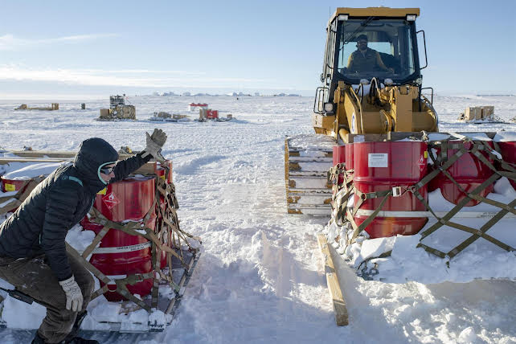
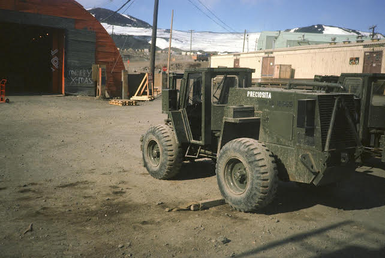
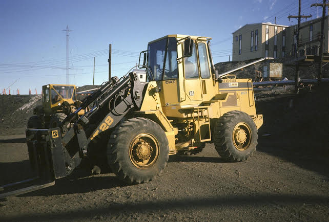
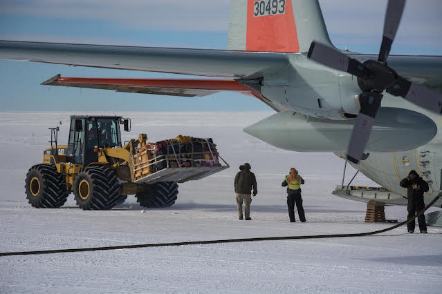
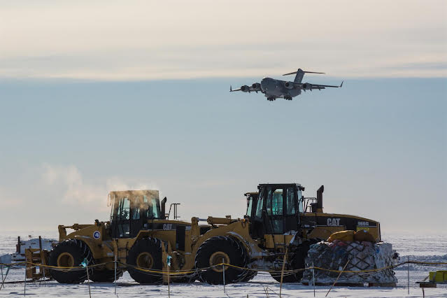
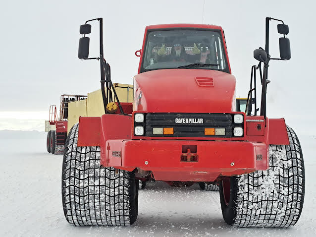

Longren Antarctic Newsletter #03 - 05.12.2022 ------------------------------ Dearest people,Welcome to another newsletter! In this edition, I'll be spotlighting the specific work that I perform here: cargo. I am most excited to present what I have been up to for the past seven weeks and to show off the various equipment that we use here. Air transportation operations Where I work, we handle all movement of people and cargo on planes, both from off continent and within Antarctica itself. There are various groups in the department. Within ATO, there are passenger services, load planning, airfield supervisors, and shuttles, just to name a few. And me, I am a cargo handler. As a cargo peep*, the work I do can be summarized simply; we pick things up and put them down somewhere else. Usually, these things are quite heavy. Additionally, places have a decent distance between them. Thus, there are three main parts to the job: -the strapping of stuff to other stuff -the picking up and putting down of stuff -the driving of stuff from point A to B I'll go over each of these parts and include some photos to provide a slice of insight into the excitement of being a delivery person. *(Many people here go by their position and first name. So, while there are a total of five Lukes on station, I am Cargo Luke. And, to provide other examples, my two wonderful roommates are Rigger Matt and Dispatch Nick.) Strapping stuff With much of the stuff being moved around weighing a few tons or more, it would be bad if said stuff moves in a way that is not intended. Hence, ratchet straps (and, at times, chains) are used to hold things down. Many small things are put together on a pallet to make a big thing, which is easier to move around with a loader or pallet carrier. Additionally, netting is used to hold everything together.  A pallet of fuel drums being moved (S. Allinger). The pallets that we use are from the air force (a universal version used between many coutries), which are large, flat, metal coated wood slabs with D-rings along the outer edge. Usually, many boxes on skids (the nailed together wood-board- thing that most normal people call a pallet) are tetris-ed together onto the air force pallet. Lifting stuff After the things are all strapped together, they commonly are moved from either the aircraft into town, or vice versa. It's a pretty simple process; just a loader with a couple levers and a person giving a few hand signals at times. We operate some loaders that are small and some that are big. Here are a bunch of photos, in order of size, of a selection of loaders that we operate.  An M4KN loader, commonly called a Pickle (NSF).  A common IT-28 loader used around-town (NSF).  A 950G loader uploading a pallet (M. Lucibella).  A 966G and a 950G loader in the foreground with a C-17 landing overhead (M. Lucibella). Driving stuff To get the large, heavy pallets (or other cargo) between town and the airfield, big trucks are used. Specifically, I want to showcase the main vehicle that is used to do so: the Kress.  My supervisor, Chris, sitting in the Kress. The cargo version of the Kress is a custom- built pallet carrier with huge tires, made to traverse the ice shelf on Antarctica. It has a capacity of about 20 tons, or 18k kilograms. It is a Frankenstein contraption, built from a 30' long dump truck front-end and 70' long cargo bed. It is a blast to drive, though spooky at first, given some of the sharp cliffs on the route to the airfield. The Kress being driven by me, the author, in front of Mt. Erebus (L. Yates). I've been really enjoying my time down here. It's a relatively simple job, with lots of driving. Simple stuff that can be left at work and not needed to be thought about when off the clock. I've picked up a part-time job bartending as well, which has been a fun way to make some extra drinking money. I'll try to gather a few more personal photos and videos of me at work and send them out later this week. I think the work that's done down here is, in many ways, amazing. I've enjoyed sharing it with you thus far. Until next time, I wish you lovely adventures. With appreciation, Luke ------------------------------ ------------------------------ If you think that someone would be interested in learning about the Antarctic and what working there is like, please do forward this letter to them. If you would like to be removed from this newsletter, just email me and I can do so. Lastly, if you have any questions about life, work, or anything else regarding Antarctica, send me an email and I can try to answer your question in the next letter. Thank you! |